GitHub API Documentation Tableau
Support

The Trading Economics Excel Add-In connects Excel to our API which provides direct access to 300.000 economic indicators, exchange rates, stock market indexes, government bond yields and commodity prices. It allows you to download millions of rows of historical data, to query our real-time economic calendar and to subscribe to updates.
The Trading Economics Excel Add-In installer can be downloaded here: Download TE Excel Add-In.
Requirements: Microsoft Windows with Excel 2010, 2013 or 2016 and Office 365.
Download the installer, launch it and follow the instructions.
If Windows shows a warning just click on "More info" and then install.
After installing the Add-In, open Excel, click on TE tab, then click on the login. The first time you use this software you will be logged as "guest:guest" with limited access to our data.
To overcome this limitations you need to get an API key and paste it on the "APIkey" menu (more info at API Key in this Docs).
Please subscribe to one of our plans if you do not have a key yet.
By default, the first time you use this Add-In, you will be logged as "guest:guest" with limited access to our data.
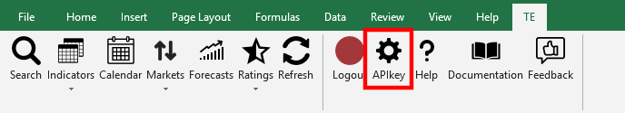To overcome this limitations you need to get an API key and paste it in this menu.
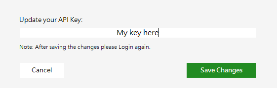Search gives direct access to all the TE API indicators.
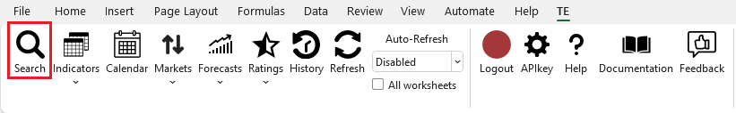You can look for countries, bonds, currencies, stocks and much more. It's also possible choose from which source/data type you want to get data from.
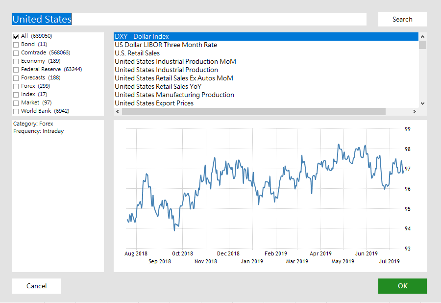The Result:
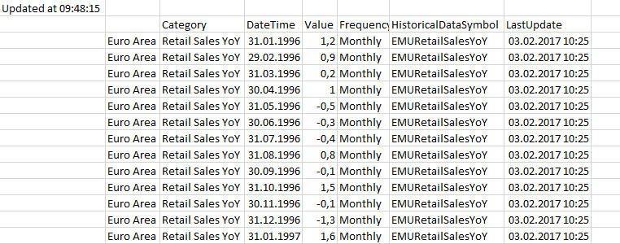There are seven different methods available to get data from TE API. These are Indicators-Latest, Indicators-Historical, Calendar, Markets, Forecasts, Country Ratings and Updates.
The Indicators-Latest method gets the latest datapoint for one or more countries and indicators. Click on the Indicators-Latest button.

On the lists from the left side you can pick the countries and the indicators. It's possible to find list items by typing in the input area above the lists. After selecting, press the Next button.
Then select which columns to display and choose a excel Cell to show the data.
The Result:
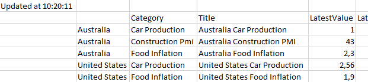The Indicators-Historical method gets data for one or more countries and indicators for a period of time. You can choose a time interval or you can get all the data available. Click on the Historical button.
On the lists from the left side you can pick the countries and the indicators. It's possible to find list items by typing in the input area above the lists. After selecting, press the Next button.
Then select which columns to display and choose a excel Cell to show the data. It's either possible to choose a time interval or to get all the data by checking the All data checkbox.

The Result:

Updates let you see what data points were most recently updated on our database.
You can choose between last week and last month data updates.
The Result:
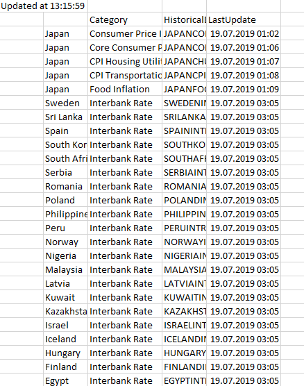The Calendar method gets the date when a certain indicator for a specific country is expected to be released. You can choose a time interval. Click on the Calendar button.
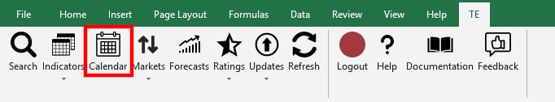
On the lists from the left side you can pick the countries and the indicators. It's possible to find list items by typing in the input area above the lists. After selecting, press the Next button.
Then select which columns to display and choose a excel Cell to show the data. Choose a time interval.
The Result:
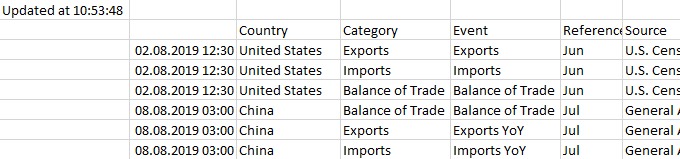The Markets method gets the latest data values for all markets indicators from either currency, index, commodities and bonds. Click on the Markets button and choose one of these options.
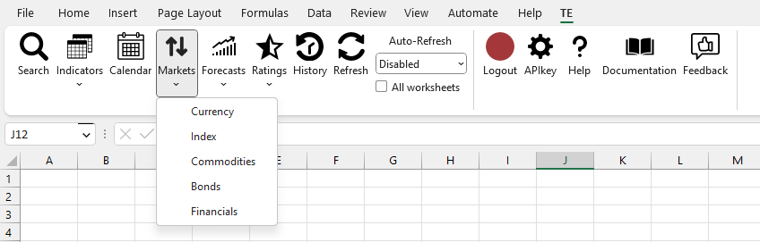The Result:
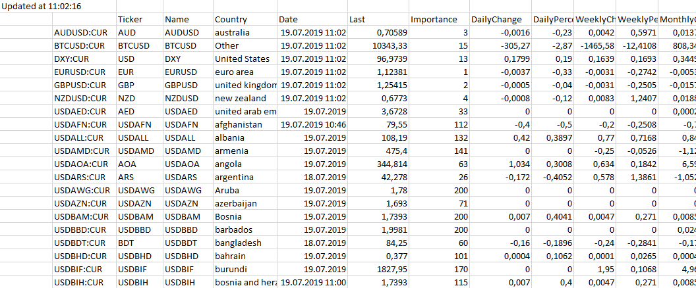The Forecasts gets value predictions for the selected indicators.
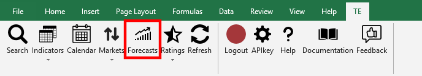
On the lists from the left side you can pick the countries and the indicators. It's possible to find list items by typing in the input area above the lists. After selecting, press the Next button.
Then select which columns to display and choose a excel Cell to show the data.
The Result:
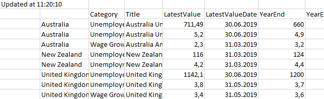Ratings gets the classification attributed to the countries public debt by the ratings agencies.
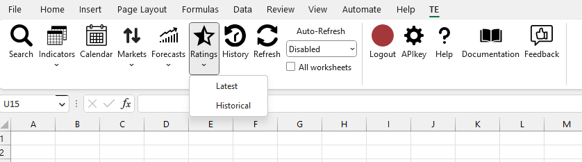
You can either get the lastest rating for all countries or historical ratings for specified countries.
In case of historical this form will pop up, just select the countries you want to get ratings from.
The Ratings Latest Result:
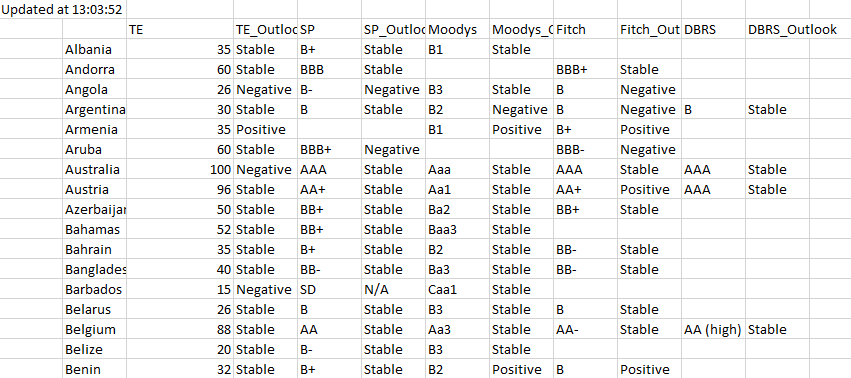Ratings Historical:
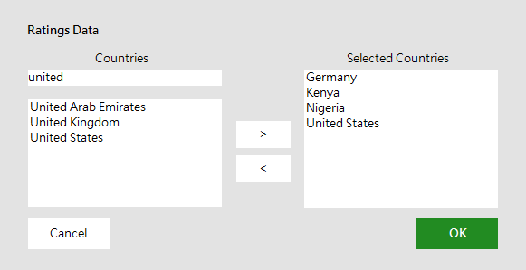The Ratings Historical Result:
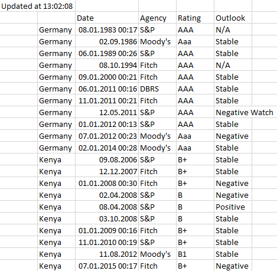Click on the Refresh Button in order to update the data you might have requested earlier.
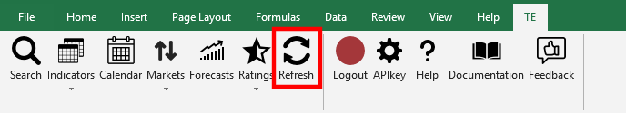